首页 / 星海旅行_沐雪季禾夏H84区
沐雪季 - 禾夏H84区
沐雪季 - 禾夏H84区是星海旅行的沐雪季限定区域（隶属禾夏星系），共 12 座小岛。
各岛的主题与产出固定；下图中的黄色编号与下表「小岛一览」的编号一一对应。
目录
区域地图

固定产出
本区所有小岛共享下列固定产出：
| 类别 | 产出 |
|---|---|
| 收集类（开宝箱/解密） | 露芽、树胶、漂流星 |
| 树木 | 苹果树、杉树、李树、竹子、迎客松 |
| 花卉 | 小丽花、雏菊、风铃草、冰凌花、紫罗兰 |
| 果实 | 苹果、蓝莓、竹笋、李子 |
小岛一览
| 编号 | 岛屿 | 说明 | 产出 |
|---|---|---|---|
| 1 夜栀之屿 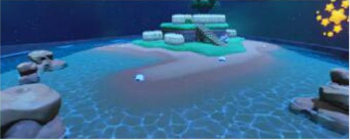 | 以夜色景致为主的岛屿。 | 苹果树、冰凌花、雏菊 | |
| 2 竹音流水之屿 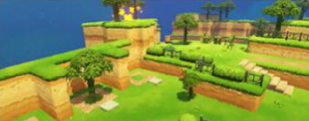 | 竹林与流水相伴。 | 竹子、冰凌花、雏菊 | |
| 3 夜影蜓风之屿 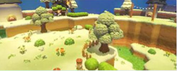 | 夜影与微风交织的小岛。 | 苹果树、冰凌花、雏菊 | |
| 4 夜泊之屿 | 适合夜间停泊的岛屿。 | 李子树、冰凌花、雏菊 | |
| 5 矿山之屿 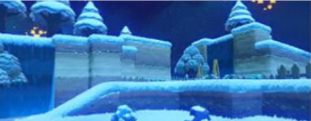 | 矿区地形，位于区域北侧。 | 杉树、紫罗兰、雏菊 | |
| 6 桥栈迷踪露屿 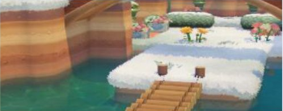 | 桥与栈道交错的露台地形。 | 苹果树、雏菊、小丽花 | |
| 7 流水湖心之屿 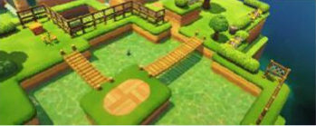 | 湖水环绕的岛屿。 | 苹果树、雏菊、小丽花 | |
| 8 风车小港之屿 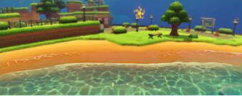 | 有小港与风车的岛屿。 | 苹果树、李子树、冰凌花、雏菊 | |
| 9 镜泊之屿 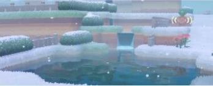 | 水面如镜的湖泊岛屿。 | 迎客松、雏菊、风铃草 | |
| 10 莓果之屿 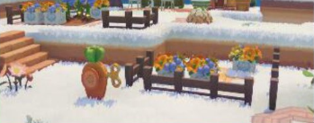 | 以蓝莓为主要产出的岛屿。 | 李子树、雏菊、冰凌花、蓝莓 | |
| 11 游园之屿 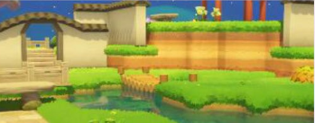 | 适合游赏的园林小岛。 | 李子树、雏菊、风铃草 | |
| 12 峡湾之屿 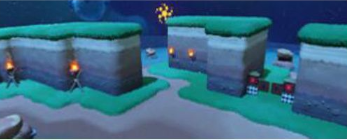 | 位于区域东南侧的峡湾地形。 | 苹果树、雏菊、紫罗兰 |
本页面内容由玩家自行整理编辑的资料站，游戏内容版本均为测试版本
本页为《星布谷地》玩家图鉴资料页，内容整理自玩家资料站与游戏内数据，仅供参考；游戏版本更新后数据可能滞后。
站点由 GitHub Pages 静态托管 · 与游戏官方及 B 站 WIKI 无隶属关系 · 游戏素材版权归原权方所有。